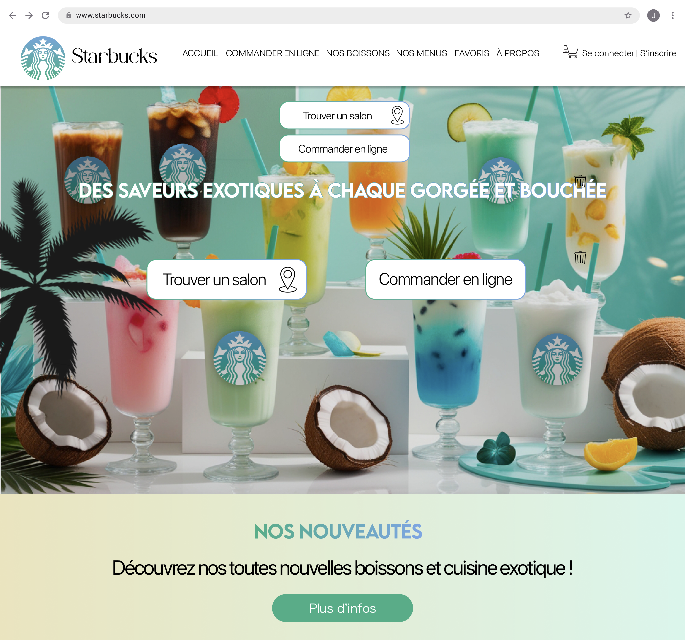

UX/UI Webdesigner
Starbucks Tropical
Rebranding personnel de Starbucks autour d’un univers tropical, revisitant son identité visuelle à travers des couleurs et des éléments graphiques inspirés de la nature exotique.
Consulter la Maquette Web ↗
Présentation visuelle
Immersion

01 / Mobile
Responsive
Aperçu de la version mobile et de son adaptation responsive sur ordinateur et téléphone.

02 / Les boissons
Adaptation
La page des boissons revisitée dans un univers tropical.

03 / Map Starbucks
Localiser un salon
Page carte interactive mobile permettant de localiser les salons Starbucks à proximité.

04 / Les plats
Adaptation
Page des plats revisitée dans un univers tropical.